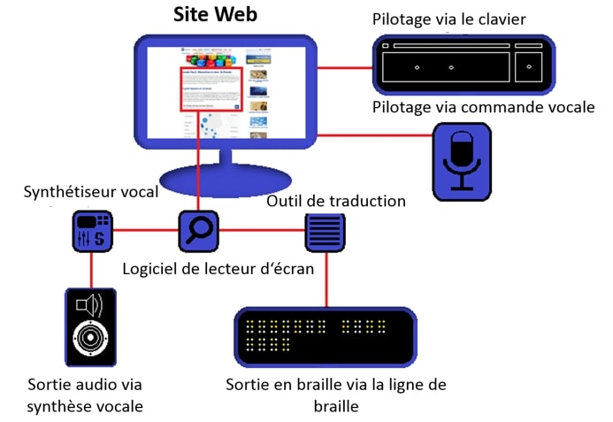

Les alt texts permettent aux personnes utilisant des lecteurs d'écran de comprendre le contenu des images sur votre site. Ils rendent vos pages accessibles à un public plus large.
Un bon alt text est descriptif de l'image, il peut contenir: le sujet, sa position, l'action, l'environnement, écrire le texte présent sur l'image. Par exemple :
Liste des ressources utiles pour comprendre les alt text :